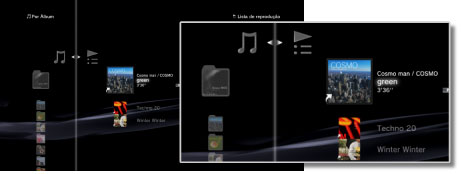
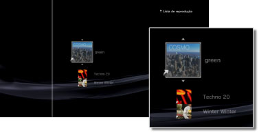

Música > Utilizar listas de reprodução > Editar listas de reprodução
Editar listas de reprodução
Pode adicionar faixas ou eliminar faixas de uma lista de reprodução ou reordenar as faixas de uma lista de reprodução.
Adicionar faixas a listas de reprodução
1. |
Seleccione |
|---|---|
2. |
Seleccione a lista de reprodução que pretende editar e, em seguida, prima o botão |
3. |
Seleccione [Editar].  |
4. |
Com os botões de direcção, seleccione a faixa que pretende adicionar à lista de reprodução de entre as faixas guardadas no disco rígido. |
 (Música) >
(Música) >  (Listas de reprodução).
(Listas de reprodução). .
. para parar a edição.
para parar a edição.Eliminar faixas das listas de reprodução
1. |
Seleccione |
|---|---|
2. |
Seleccione a lista de reprodução que pretende editar e, em seguida, prima o botão |
3. |
Seleccione [Editar]. |
4. |
Seleccione a faixa que pretende eliminar da lista de reprodução e, em seguida, prima o botão |
 .
.Notas
- Mesmo que uma faixa seja eliminada de uma lista de reprodução, o ficheiro de música não é eliminado do disco rígido.
- Se uma faixa adicionada à lista de reprodução for eliminada do disco rígido, a faixa será automaticamente eliminada da lista de reprodução.
Reordenar faixas numa lista de reprodução
1. |
Seleccione |
|---|---|
2. |
Seleccione a lista de reprodução que pretende editar e, em seguida, prima o botão |
3. |
Seleccione [Editar]. |
4. |
Seleccione a faixa que pretende mover e, em seguida, prima o botão  |
5. |
Com os botões |
 .
.
 , mova a faixa para a posição pretendida e, em seguida, prima o botão
, mova a faixa para a posição pretendida e, em seguida, prima o botão